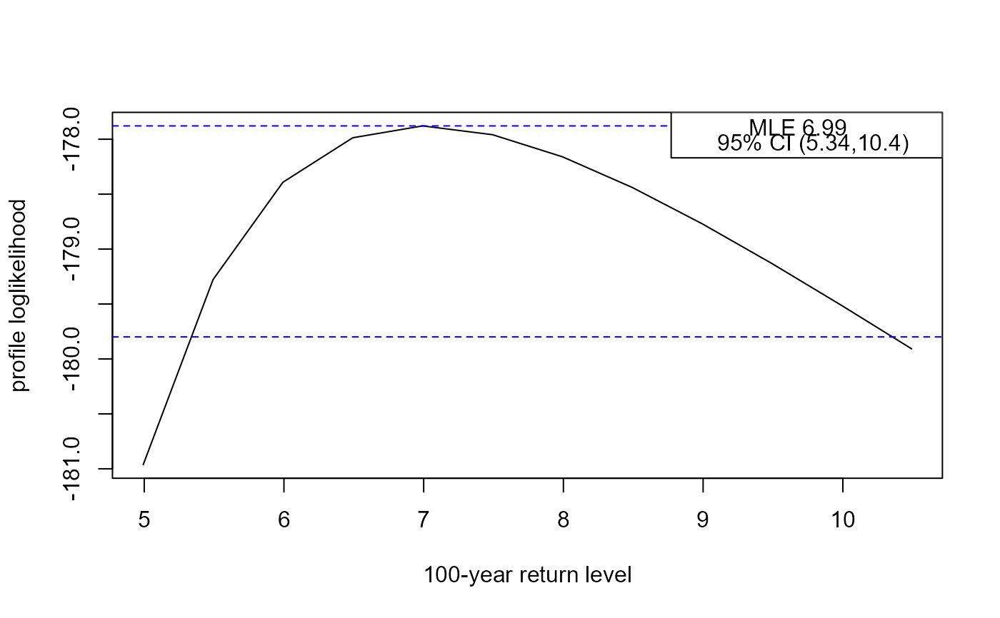

Return Level Inferences for Stationary Extreme Value Models
Source:R/return_level.R
return_level.RdCalculates point estimates and confidence intervals for m-observation
return levels for stationary extreme value fitted model objects
returned from alogLik. Two types of interval may be returned:
(a) intervals based on approximate large-sample normality of the maximum
likelihood estimator for return level, which are symmetric about the point
estimate, and (b) profile likelihood-based intervals based on an (adjusted)
loglikelihood.
return_level( x, m = 100, level = 0.95, npy = 1, prof = TRUE, inc = NULL, type = c("vertical", "cholesky", "spectral", "none") )
Arguments
| x | An object inheriting from class |
|---|---|
| m | A numeric scalar. The return period, in units of the number of observations. See Details for information. |
| level | A numeric scalar in (0, 1). The confidence level required for
confidence interval for the |
| npy | A numeric scalar. The |
| prof | A logical scalar. Should we calculate intervals based on profile loglikelihood? |
| inc | A numeric scalar. Only relevant if |
| type | A character scalar. The argument |
Value
A object (a list) of class "retlev", "lax" with the
components
Named numeric vectors containing the respective
lower 100level% limit, the MLE and the upper
100level% limit for the return level.
If prof = FALSE then rl_prof will be missing.
Estimated standard error of the return level.
If prof = TRUE then
these components will be present, containing respectively: the maximised
loglikelihood; the critical value and a matrix with return levels in
the first column (ret_levs) and the corresponding values of the
(adjusted) profile loglikelihood (prof_loglik).
The input values of m and level.
The call to return_level.
Details
At present return_level only supports GEV models.
Care must be taken in specifying the input value of m,
taking into account the parameterisation of the original fit.
For GEV models it is common for each observation to relate to a year.
In this event the m-observation return level is an m-year
return level.
For details about the definition and estimation of return levels see Chapter 3 and 4 of Coles (2001).
The profile likelihood-based intervals are calculated by
reparameterising in terms of the m-year return level and estimating
the values at which the (adjusted) profile loglikelihood reaches
the critical value logLik(x) - 0.5 * stats::qchisq(level, 1).
This is achieved by calculating the profile loglikelihood for a sequence
of values of this return level as governed by inc. Once the profile
loglikelhood drops below the critical value the lower and upper limits are
estimated by interpolating linearly between the cases lying either side of
the critical value. The smaller inc the more accurate (but slower)
the calculation will be.
References
Coles, S. G. (2001) An Introduction to Statistical Modeling of Extreme Values, Springer-Verlag, London. https://doi.org/10.1007/978-1-4471-3675-0_3
See also
plot.retlev for plotting the profile loglikelihood
for a return level.
Examples
got_evd <- requireNamespace("evd", quietly = TRUE) if (got_evd) { library(evd) # An example from the evd::fgev documentation set.seed(4082019) uvdata <- evd::rgev(100, loc = 0.13, scale = 1.1, shape = 0.2) M1 <- fgev(uvdata) adj_fgev <- alogLik(M1) # Large inc set here for speed, sacrificing accuracy rl <- return_level(adj_fgev, inc = 0.5) summary(rl) plot(rl) }#> lower mle upper #> 5.337685 6.992529 10.354765got_ismev <- requireNamespace("ismev", quietly = TRUE) if (got_ismev) { library(ismev) # An example from the ismev::gev.fit documentation gev_fit <- gev.fit(revdbayes::portpirie, show = FALSE) adj_gev_fit <- alogLik(gev_fit) # Large inc set here for speed, sacrificing accuracy rl <- return_level(adj_gev_fit, inc = 0.05) summary(rl) plot(rl) }#> lower mle upper #> 4.518708 4.688429 5.070614